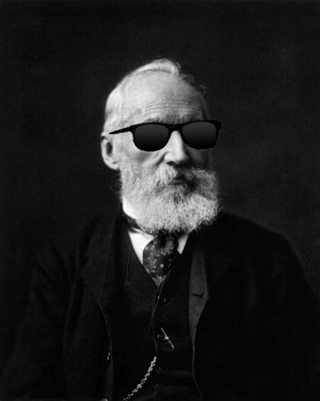

StatsD
To Measure is to Know
Created by Cameron Manavian / @camsjams
Lord Kelvin
If you can not measure it, you can not improve it.

William Thomson (of −273°C fame)
Stats, what are they good for?
Monitoring is usually related to measuring the three levels of a system: network, machine, and the application.Application measurement is usually the hardest to accomplish ... and the most important!
- Centered around your business
- The metrics change as your application does
- Can be cumbersome to setup and maintain
- The more data we have, the more we know what is happening at any given moment.
Enter StatsD
- StatsD is a daemon, ideally running on each application server
- Ported by Etsy to Node.Js, inspired from Flickr's Perl StatsD
- It listens for statistics sent over UDP/TCP
- The "fire and forget" feature of UDP means reduced risk of introducing latency to your app
- Sends aggregates to one or more pluggable backend services like Graphite
Available backends besides Graphite
- MySQL
- CouchDB
- Mongo
- Socket.io
UDP
The User Data Protocol is a connectionless transmission, meaning no handshakes ... but also no guarantee of delivery, de-duplication, or time ordering.
For stats, this fire and forget model works fine!What could be measured?
- Memory usage
- Error rate on a particular service
- Changes in successes and failures in relation to deploys
- Time code takes to complete
- Unique users online
Setting up new data
There is no overhead for adding a new metric
client.timing('time_to_send_emails', 4000);
client.increment('number_of_new_offers');
client.gauge('active_connections', 1337);
client.set('users', currentUserId);
See data relative to deploys
client.increment('login_success');
// elsewhere
client.increment('login_failure');

Diving deeper into data

Etsy deployment sample graph

Etsy multiple deployments

Measure Everything
We’ve found that tracking everything is key to moving fast, but the only way to do it is to make tracking anything easy. Using StatsD, we enable engineers to track what they need to track, at the drop of a hat, without requiring time-sucking configuration changes or complicated processes.
What's that Lord Kelvin?
To measure is to know.

THE END
- Source